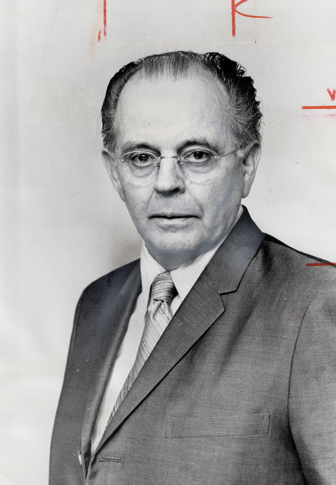

-1-MasterItem.svg)
Stories of Westminster United Church & its People / Page
98
Ernest Marshall Howse, a Son of Newfoundland
Our Fifth Minister (Ernest’s life up to the point
of his coming to Westminster)
His Youth
Westminster’s first four ministers came to us from the Scottish Presbyterian
tradition; Pitblado and McKinnon as children from Scotland to Nova Scotia
and from there to us; Christie as an adult, married with eight children,
and preaching in Glasgow came directly to us when we “called”
him to Winnipeg.
Sutherland Bonnell, born and raised in Nova Scotia, was preaching
in St. John, New Brunswick when, in 1929, he decided to come to us under
the rubric of the newly formed United Church of Canada. Bonnell’s Presbyterian roots were firm
however and he later left us to go to Fifth Avenue Presbyterian Church in New
York.
Ernest Marshall Howse came from a very different tradition both in religion and
environment.
Born and raised in the outports of Newfoundland his family were Anglicans,
later, Methodists, living
on The Rock, not Canada, but near enough! His childhood and years as a young
adult were spent in
communities of fishermen whose lives were dependent on the unforgiving sea where
it’s vagaries
taxed and often overcame the stoutest of boats and the strongest of men.
Newfoundland is regarded as the oldest land in North America settled by
Europeans. The Vikings,
of course, were on the island with their 11th century settlement in L’Anse aux Meadows on the North
coast. But their stay was probably no longer than a year before they moved on,
it’s thought, along
the mainland coast of North America.
It was at Cape Bonavista, further south along the eastern shore of (NFLD) that
John Cabot,
(Zuan Chabotto as he signed himself), first landed in 1498. “What a happy sight” (Bonavista!)
he shouted. John was an Italian sailing under the flag of England’s Henry VII. Europe
had arrived to this new world.
Table
of Contents

Photo: Toronto Star Photographic Archive